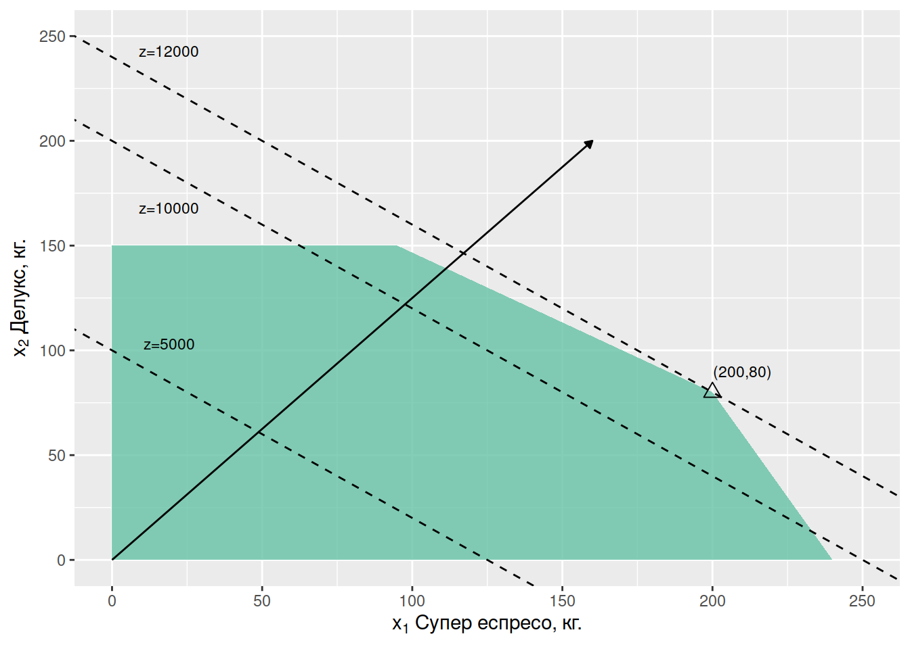
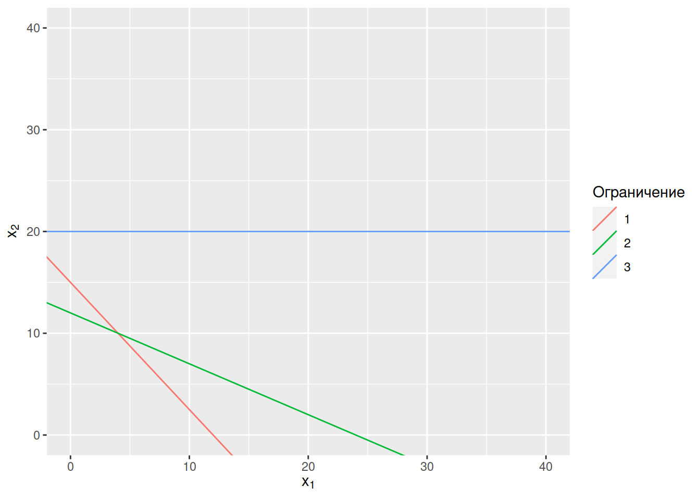

Част 2 Графичен метод
2.1 Планиране на производство
Бутиково кафене в София предлага два продукта: Супер еспресо и Делукс еспресо. За приготвянето на един килограм от първия вид кафе са необходими по равни части бразилско и кубинско кафе, а рецептата за Делукс предвижда смес от бразилско и кубинско кафе в пропорция 1 към 3. Доставчиците са готови да осигурят 120 кг бразилско и 160 кг. кубинско кафе. Заведението знае, че няма да може да продаде повече от 150 кг. Делукс еспресо. От всеки продаден килограм Супер еспресо заведението печели 40 лв., докато печалбата от килограм Делукс възлиза на 50 лв.
Колко от двата типа кафе ще препоръчате на кафенето да смеси?
2.1.1 Математически модел
Целеви променливи:
\[ \begin{align} & x_1: \text{ Супер еспресо (кг.)}\\ & x_2: \text{ Делукс еспресо (кг.)} \end{align} \]
\[ \max z = 40 x_1 + 50 x_2 \text{ (целева функция)} \\ \begin{align} 0.5 x_1 + 0.25 x_2 & \leq 120 \text{ (бразилско кафе)}\\ 0.5 x_1 + 0.75 x_2 & \leq 160 \text{ (кубинско кафе)} \\ 0 \cdot x_1 + x_2 & \leq 150 \text{ (търсене Делукс)}\\ x_1 & \geq 0 \\ x_2 & \geq 0 \end{align} \]
2.1.2 Допустимо множество
Както и в предишната задача ще изобразим графично допустимото множество, като начертаем правите, към всяко от петте неравенства:
\[ \begin{align} 0.5 x_1 & + 0.25 x_2 & = & 120 \tag{2.1} \\ 0.5 x_1 & + 0.75 x_2 & = & 160 \tag{2.2} \\ 0 \cdot x_1 & + x_2 & = & 150 \tag{2.3} \end{align} \]
Първо ще пресметнем пресечните точки на трите прави с осите \(x_1\) и \(x_2\)?
- Права бразилско кафе: (0, 120 / 0.25 = 480), (120 / 0.5 = 240, 0)
- Права кубинско кафе: (0, 160 / 0.75), (160 / 0.5, 0)
- Права търсене на Делукс: (0, 150), (100, 150) Тази права е успоредна на оста \(x_1\).
Графика 2.1: Прави на ограниченията и допустимо множество.
Допустимото множество е определено от всички точки, които едновременно изпълняват всички ограничения. На графика 2.1 това е полигонът определен от
- Пресечната точка на равенствата на двете ограничения за неотрицателност: (0, 0)
- Пресечната точка на неотрицателността на “Супер еспресо” (оста \(x_1\)) и “бразилско кафе”: (240, 0).
- Пресечната точка на равенствата на ограниченията “бразилско кафе” и “кубинско кафе”
- Пресечната точка на равенствата на ограниченията “кубинско кафе” и “търсене на Делукс”
- Пресечната точка на равенствата на ограниченията “търсене на Делукс” и неотрицателността на Делукс (оста \(x_2\)). Вече пресметнахме тази точка, когато чертахме правите към ограниченията: (0, 150).
В пресечната точка на правите към “кубинско кафе”/“бразилско кафе” са изпълнени и двете равенства едновременно. За да намерим точката трябва да решим система от двете уравнения
\[ \begin{equation} \left | \begin{array}{@{}l@{}} 0.5 x_1 + 0.25 x_2 & = 120 \text{ (1: бразилско кафе)} \\ 0.5 x_1 + 0.75 x_2 & = 160 \text{ (2: кубинско кафе)} \end{array}\right.\,. \end{equation} \]
Един начин да решим системата е да извадим първото уравнение от второто уравнение. Когато го направим получаваме
\[ \begin{align} (0.75 - 0.25) x_2 & = 160 - 120 \\ 0.5 x_2 & = 40 \\ x_2 & = 80 \end{align} \]
Заместваме с \(x_2 = 80\) в първото уравнение и получаваме
\[ \begin{align} 0.5 x_1 + 0.25 \cdot 80 & = 120\\ x_1 & = 200. \end{align} \]
Решението на системата е (200, 80): пресечната точка на двете прави.
За да намерим координатите на пресечната точка на равенствата на “кубинско кафе” и “търсене на Делукс” трябва да решим системата от две уравнения принадлежащи към тези ограничения:
\[ \begin{equation} \left | \begin{array}{@{}l@{}} 0.5 x_1 + 0.75 x_2 & = 160 \text{ (2: кубинско кафе)} \\ 0\cdot x_1 + x_2 & = 150 \text{ (3: търсене делукс)} \end{array}\right.\,. \end{equation} \] Решението на системата можем да получим, като заместим в първото уравнение с \(x_2 = 150\), за да получим
\[ \begin{equation} \left | \begin{array}{@{}l@{}} 0.5 x_1 + 0.75 \cdot 150 = 160 \implies 0.5x_1 = 160 - 112.5 \implies x_1 = 95 \\ x_2 = 150 \end{array}\right.\,. \end{equation} \]
С това намерихме координатите на пресечната точка между правите на “кубинско кафе” и “търсене на Делукс”: (95, 150).
Така получаваме, че върховете на допустимото множество (графика 2.2) са (0, 0), (240, 0), (200, 80), (95, 150), (0, 150).
Графика 2.2: Допустимо множество и координати на върховете.
2.1.3 Целева функция, нормален вектор
За да определим оптималния план графично ще начертаем прави, съответстващи на различни нива на печалба.

Всички комбинации \(x_1\) и \(x_2\), за които печалбата (целевата функция) е равна на 5000 лв лежат на права, определена от равенството:
\[ z = 40x_1 + 50x_2 = 5000 \]
Всички комбинации \(x_1\) и \(x_2\), за които печалбата (целевата функция) е равна на 1000 лв. лежат на права, определена от равенството
\[ z = 40x_1 + 50x_2 = 10000 \] Двете прави са успоредни една спрямо друга, тъй като наклонът на правите зависи от коефициентите на \(x_1\) и \(x_2\) в уравненията и не зависи от константите (5 000 в първото уравнение и 10 000 във второто).
Векторът (40, 50) се нарича нормален вектор на правите на функцията на печалба и е перпендикулярен на тях. Координатите на нормалния вектор се получават от коефициентите на \(x_1\) и \(x_2\) в целевата функция.
2.1.4 Оптимален план
Правата на максималната печалба (12 000 лв.) се допира до допустимото множество в точката \((x^*_1 = 200, x^*_2 = 80)\), която е и оптималния план.
2.1.5 Реализация в Excel
Тук можете да изтеглите пример за реализация в Excel.
Съдържание на “Answer report”
| Cell | Name | Original Value | Final Value |
|---|---|---|---|
| $E$3 | Order Profit | 0 | 12000 |
| Cell | Name | Original Value | Final Value | Integer |
|---|---|---|---|---|
| $B$3 | Order Super | 0 | 200 | Contin |
| $C$3 | Order Delux | 0 | 80 | Contin |
| Cell | Name | Cell Value | Formula | Status | Slack |
|---|---|---|---|---|---|
| $D$7 | Brazilian Used | 120 | $D\(7<=\)E$7 | Binding | 0 |
| $D$8 | Cuban Used | 160 | $D\(8<=\)E$8 | Binding | 0 |
| $D$9 | Demand Used | 80 | $D\(9<=\)E$9 | Not Binding | 70 |
Съдържание на “Sensitivity report”
| Cell | Name | Final value | Reduced Cost | Objective Coefficient | Allowable Increase | Allowable Decrease |
|---|---|---|---|---|---|---|
| $B$3 | Order Super | 200 | 0 | 40 | 60 | 6.666667 |
| $C$3 | Order Delux | 80 | 0 | 50 | 10 | 30.000000 |
| Cell | Name | Final value | Reduced Cost | Objective Coefficient | Allowable Increase | Allowable Decrease |
|---|---|---|---|---|---|---|
| $D$7 | Brazilian Used | 120 | 20 | 120 | 4.0e+01 | 35 |
| $D$8 | Cuban Used | 160 | 60 | 160 | 3.5e+01 | 40 |
| $D$9 | Demand Used | 80 | 0 | 150 | 1.0e+30 | 70 |
2.1.6 Дефицитност на ресурси
В оптималния план \((x^*_1 = 200, x^*_2 = 80)\) заведението изразходва:
\[ 0.5 x^*_1 + 0.25 x^*_2 = 0.5 \cdot 200 + 0.25 \cdot 80 = 120 \text{ кг. бразилско кафе} \\ 0.5 x^*_1 + 0.75x^*_2 = 0.5 \cdot 200 + 0.75 \cdot 80 = 160 \text{ кг. кубинско кафе} \\ 0 \cdot x^*_1 + x^*_2 = 80 \text{ кг. търсене Делукс} \] Общо заведението разполага с 120 кг. бразилско кафе, 160 кг. кубинско кафе и 150 кг. търсене на Делукс. Тъй като в оптимума се изразходва цялото налично количество от кубинско и бразилско кафе казваме, че тези ресурси са дефицитни. Кои ресурси са дефицитни може да се види лесно от графиките. В пресечната точка на две прави едновременно са изпълнени и двете уравнения, които ги определят.
- Във всяка точка от правата на ограничението за бразилското кафе важи, че изразходваното количество бразилско кафе е 120 кг., защото е изпълнено уравнение (2.1).
- Във всяка точка от правата на ограничението за кубинското кафе важи, че изразходваното количество кубинско кафе е 120 кг., защото е изпълнено уравнението (2.2).
- Във всяка точка от правата на ограниченоето за търсене на Делукс важи, че изразходваното количество “търсене на Делукс” е 150 кг., защото е изпълнено уравнение (2.3).
В оптималния план остават \(150 - 80 = 70\) кг. неизползвано търсене на Делукс (slack). Казваме, че “търсенето на Делукс” е недефицитен ресурс.
2.1.7 Допустими граници на промяна
В какви граници може да се променя ограничението за бразилското кафе без да се промени характера на оптималния план (без да се променят дефицитните ресурси)?
В какви граници може да се променя ограничението за кубинското кафе без да се промени характера на оптималния план (без да се променят дефицитните ресурси)?
В какви граници може да се променя ограничението за търсенето на Супер еспресо кафе без да се промени характера на оптималния план (без да се променят дефицитните ресурси)?
Графика 2.3: Допустимо множество и оптимум при различни нива на разполагаемо кубинско кафе: 120 кг. (първоначална стойност в задачата), и 220 кг.
Графика 2.4: Допустимо множество и оптимум при различни нива на разполагаемо кубинско кафе: 120 кг. (първоначална стойност в задачата), и 220 кг.
Графика 2.5: Допустимо множество и оптимум при различни нива на разполагаемо кубинско кафе: 120 кг. (първоначална стойност в задачата), и 220 кг.
Нека да начертаем правите на “кубинско кафе” при четири нива на наличност на ресурса: 120 кг., 180 кг., 195 кг. и 220 кг. Уравненията за всяко от тези нива са:
\[ 0.5 x_1 + 0.75 x_2 = 160 \\ 0.5 x_1 + 0.75 x_2 = 180 \\ 0.5 x_1 + 0.75 x_2 = 195 \\ 0.5 x_1 + 0.75 x_2 = 220 \\ \] и в графика 2.5 са представени с четирите оранжеви прави.
От графиката виждаме, че при наличие на кубинско кафе от повече от 195 кг. се променя характера на оптимума, защото дефицитни стават ресурсите “бразилско кафе” и “търсене Делукс”. Разликата между 195 кг. и първоначално наличните в задачата 160 кг. наричаме допустимо увеличение на ресурса (195 - 160 = 35 кг.).
Пресечната точка на уравненията към “Търсене Делукс” и “Бразилско кафе” намираме като решение на системата от двете уравнения (2.1) и (2.3):
\[ \begin{equation} \left | \begin{array}{@{}l@{}} 0.5 x_1 + 0.25 x_2 & = 120 \\ 0 \cdot x_1 + x_2 & = 150 \end{array}\right.\,. \end{equation} \]
Решението на системата е (165, 150).
2.1.8 Скрити цени
Доставчикът предлага да достави допълнителни 10 кг. кубинско кафе на цена от 20 лв./кг. Бихте ли препоръчали на заведението да приеме тази оферта?
Съседно кафене предлага да купи 5 килограма от бразилското кафе на цена 40 лв./кг. Изгодно ли е за заведението да продаде това количество кафе?
2.2 Планиране на производство (2)
Фирма, специализирана в производство на зимни палта се опитва да посрещне търсенето на нейните стоки с възможно най-малки разходи. Всеки работник, нает в началото на сезона работи през целия сезон, произвежда 80 палта и получава 6000 лв. заплата. В началото на годината фирмата разполага с 30 работника.
Търсенето на палта има силни сезонни колебания и фирмата има три опции, за да отговори на тези вариации:
- работниците могат да работят и по-продължително, но допълнителният труд се заплаща 50% по-скъпо и работниците могат да работят не повече от 20% повече от нормалното работно време.
- Произведени в предишния период палта могат да се складират на цена от 12 лв. на сезон за всяко палто.
- Фирмата може да назначава и освобождава служители. За назначаване на един нов служител цената е 500 лв. За освобождаване на служител разходите възлизат на 420 лв.
- Фирмата няма начални запаси от готови палта
Маркетинговият отдел на предприятието оценява, че през следващите четири сезона търсенето ще възлиза на съответно 5000, 2000, 500 и 1500 палта.
Изгответе математически модел с който да намерите оптималния план (в смисъл на най-ниски разходи) за тази фирма.
2.3 Пример (3)
Фирма произвежда два вида месингови изделия – А и Б и разполага с 600 kWh електроенергия, 480 кг. мед и 750 кг. цинк. Разходите за електроенергия и метали са дадени в таблица 2.6. Намерете максималния приход, който може да реализира фирмата при следните два сценария.
| Ресурс | А | Б |
|---|---|---|
| Ел. енергия | 3 | 3 |
| Мед | 3 | 2 |
| Цинк | 4 | 1 |
2.3.1 Допустимо множество
\[ \begin{align} x_1: \text{брой единици от продукт А}\\ x_2: \text{брой единици от продукт Б} \end{align} \] \[ \begin{align} 3 x_1 + 3 x_2 & \leq 600 \text{ (ел. енергия)}\\ 3 x_1 + 2 x_2 & \leq 480 \text{ (мед)}\\ 4 x_1 + 1 x_2 & \leq 750 \text{ (цинк)}\\ x_1 \geq 0 \\ x_2 \geq 0 \end{align} \]
Допустимото множество е полигонът с върхове: (0, 0), пресечната точка на “мед” и оста \(x_1\): (160, 0), пресечната точка на “мед” и “ел. енергия” и пресечната точка на “ел. енергия” с оста \(x_2\).
Пресечната точка на “мед” и “ел. енергия” можем да намерим, като решим системата уравнения
\[ \begin{align} 3 x_1 + 3 x_2 & = 600\\ 3 x_1 + 2 x_2 & = 480. \end{align} \]
В предходния пример намерихме пресечната точка на правите към две ограничения като решихме система от две уравнения (като извадихме едното уравнения от другото). Тук ще решим тази система от уравнения с правилото на Крамер, за да го илюстрираме (двата подхода са еквивалентни):
Теорема 2.1 (Формули на Крамер) За система от линейни уравнения
\[ \begin{equation} \left | \begin{array}{@{}l@{}} a_{11} x_1 + a_{12} x_2 & = b_1 \\ a_{21} x_1 + a_{22} x_2 & = b_2 \end{array}\right.\,, \end{equation} \] решението на системата (ако съществува едно решение) е дадено от:
\[ \begin{align} x^*_1 = \frac{\Delta_1}{\Delta}\\ x^*_2= \frac{\Delta_2}{\Delta} \end{align} \] където \(\Delta_1\), \(\Delta_2\) и \(\Delta\) са детерминантите:
\[ \Delta = \left| \begin{array}{cc} a_{11} & a_{12} \\ a_{22} & a_{22} \end{array} \right|, \Delta_1 = \left | \begin{array}{cc} b_1 & a_{21} \\ b_2 & a_{22} \end{array} \right |, \Delta_2 = \left | \begin{array}{cc} a_{11} & b_1 \\ a_{21} & b_2 \end{array} \right |.\, \]
Ако \(\Delta = 0\), тогава двете уравнения в системата са линейно зависими, което означава, че правите, дефинирани от уравненията са успоредни.
Приложено в конкретния пример получаваме:
\[ \begin{align} \Delta & = \left| \begin{array}{cc} 3 & 3 \\ 3 & 2 \end{array} \right| = 3 \cdot 2 - 3 \cdot 3 = 6 - 9 = -3 \\ \Delta_1 & = \left | \begin{array}{cc} 600 & 3 \\ 480 & 2 \end{array} \right | = 600 \cdot 2 - 3 \cdot 480 = -240 \\ \Delta_2 & = \left | \begin{array}{cc} 3 & 600 \\ 3 & 480 \end{array} \right | = 3 \cdot 480 - 600 \cdot 3 = -360 \implies\\ x^*_1 & = \frac{\Delta_1}{\Delta} = \frac{-240}{-3} = 80 \\ x^*_2 & = \frac{\Delta_2}{\Delta} = \frac{-360}{-3} = 120. \end{align} \]
2.3.2 Сценарий 1
Цента на продукт А е 9 единици, а на продукт Б – 8 единици. Намерете максималния приход, който може да реализира фирмата.
Целева функция
Решение:
2.3.3 Сценарий 2
Цента и на двата продукта е 9 единици. Намерете максималния приход, който може да реализира фирмата.
 Оптимални са всички комбинации от \(x_1\) и \(x_2\), които лежат на отсечката (0, 200), (80, 120):
\[ \left( \begin{array}{c} x^*_1 \\ x^*_2 \end{array} \right) = \alpha \left(\begin{array}{c} 0 \\ 200 \end{array}\right) + (1 - \alpha) \left(\begin{array}{c} 80 \\ 120 \end{array}\right)\\ \alpha \in [0, 1] \]
2.4 Пример (4)
Намерете решението на следната задача:
\[ \max z = 8x_1 + 6 x_2\\ 5 x_1 + 4 x_2 \leq 60\\ 2 x_1 + 4 x_2 \leq 48 \\ 3 x_2 \geq 60 \\ x_1 \geq 0\\ x_2 \geq 0 \]
2.5 Пример (5)
Намерете решението на следната задача:
\[ \max z = 3x_2 \\ -2 x_1 + x_2 \leq 4 \\ x_2 \geq 2 \\ x_1 \geq 0\\ x_2 \geq 0 \]